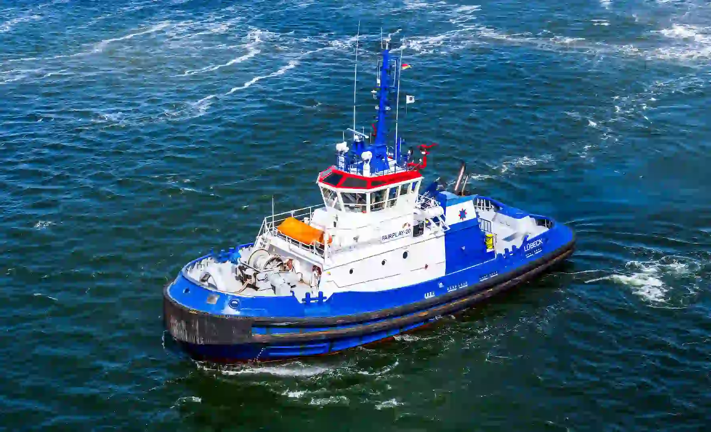
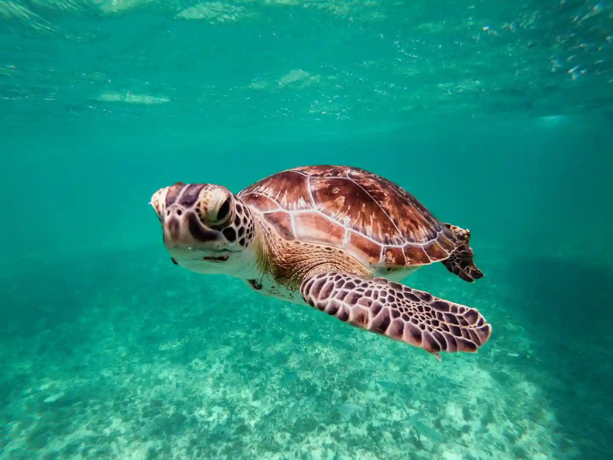
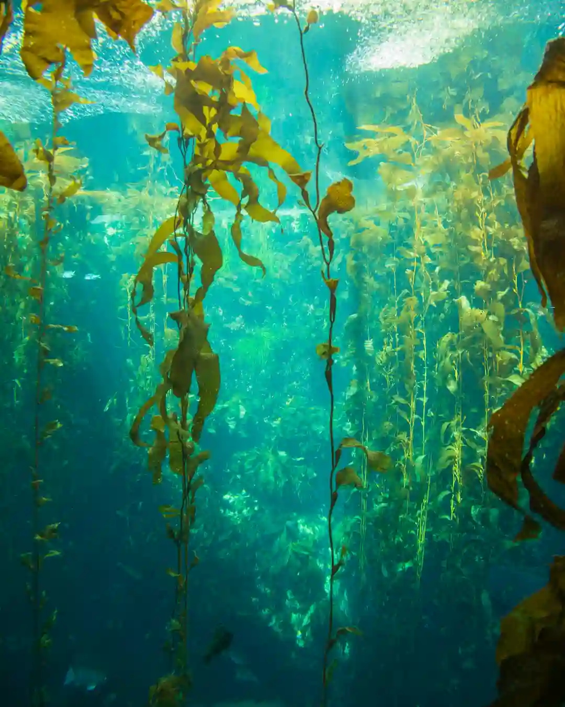
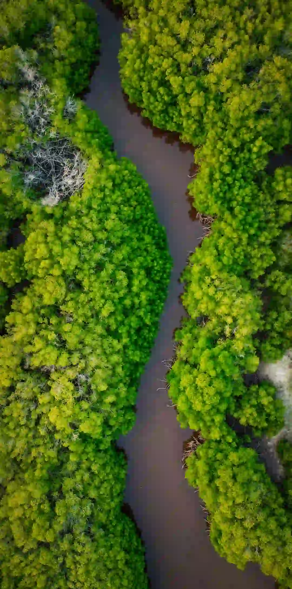

FIELD STUDY / 01
Marine research
Scientific observation and knowledge development to understand changing ocean conditions.
We connect marine research, ecosystem knowledge and conservation action to support a healthier ocean.
Discover Marine
Marine brings together knowledge and action to better understand ocean environments. Our approach connects scientific observation with practical conservation priorities.
From coastal habitats to open-water ecosystems, we believe that informed decisions begin with reliable research and a deeper understanding of the natural world.
Explore our approachFour connected areas guide our work across marine environments and conservation research.
Scientific observation and knowledge development to understand changing ocean conditions.
Supporting the protection and recovery of marine and coastal environments.
Documenting environmental observations and identifying relevant changes over time.
Making marine information accessible, organized and useful for informed decisions.
SCROLL TO EXPLORE ALL FOUR AREAS
A selection of illustrative research records showing how marine observations can be documented and organized.
ILLUSTRATIVE DATA / NOT LIVE MEASUREMENTS| Reference | Research area | Observation | Date |
|---|---|---|---|
| MR-001 | Coral Triangle | Reef habitat assessment | Nov 2026 |
| MR-002 | North Pacific | Water quality study | Oct 2026 |
| MR-003 | Indian Ocean | Coastal habitat survey | Sep 2026 |
| MR-004 | South Atlantic | Marine biodiversity review | Aug 2026 |
Marine ecosystems support biodiversity, coastal resilience and the natural processes that sustain life.
| Ecosystem | Environment | Ecological role |
|---|---|---|
 Coral reefs | Tropical marine | Marine biodiversity |
 Seagrass meadows | Shallow coastal | Nursery and carbon storage |
 Mangrove forests | Intertidal coastal | Coastal protection |
Explore how research, environmental understanding and conservation can contribute to a healthier ocean.
Get in touch